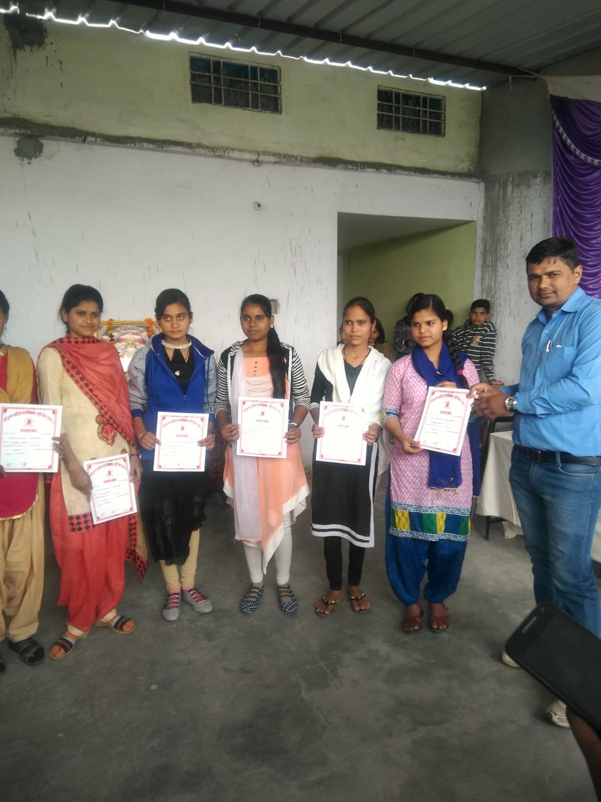
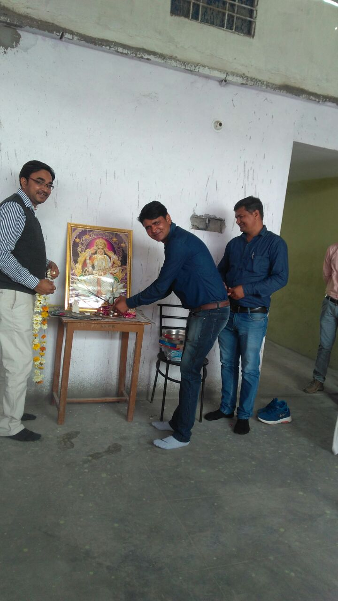
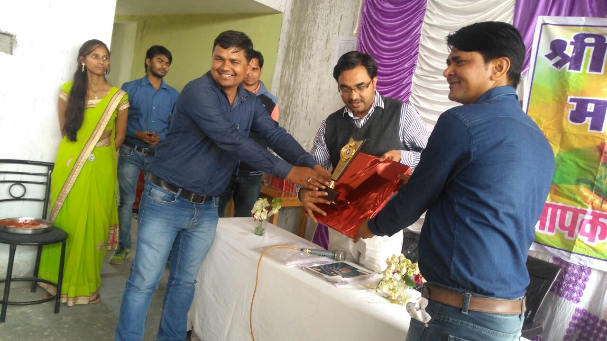
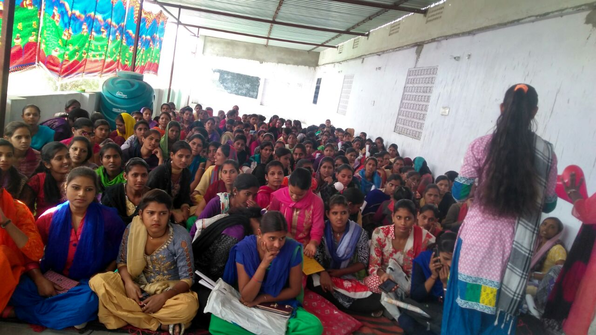
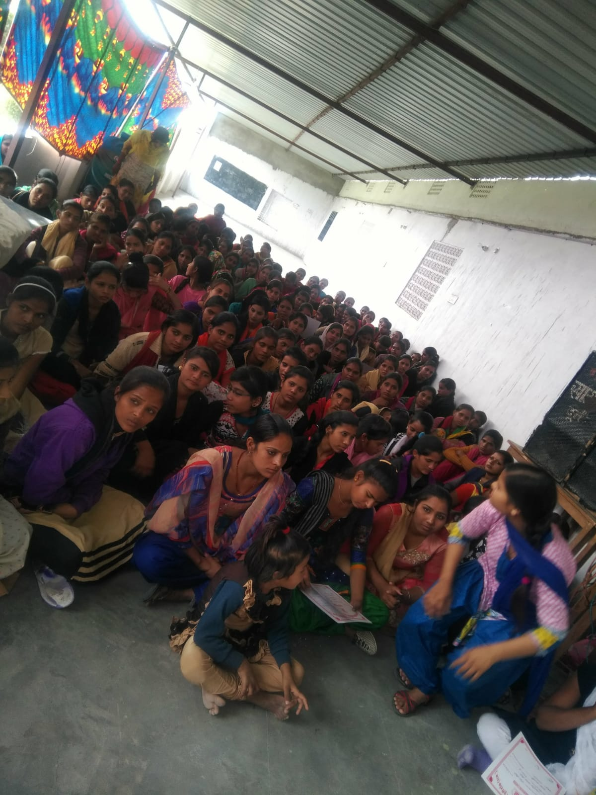
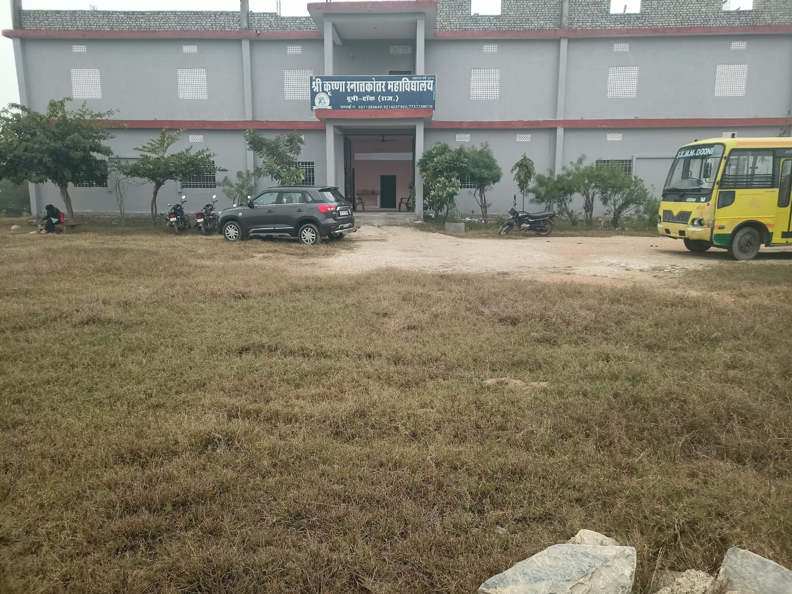
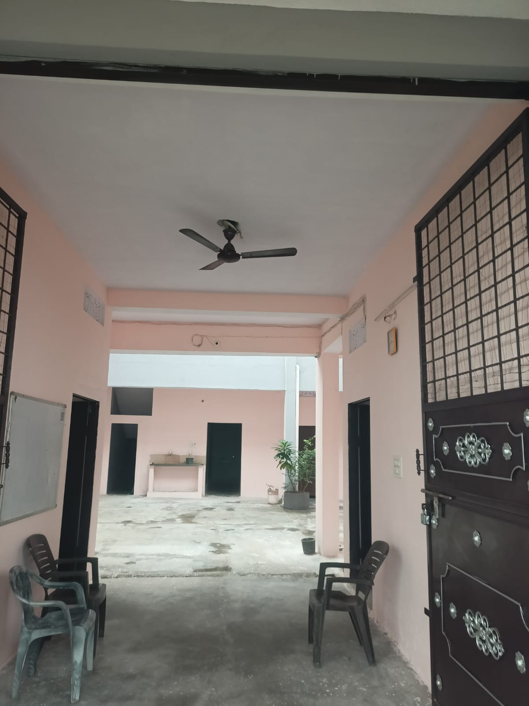

Photo Gallery
Moments at Our College
Highlights from our certificate distribution, inaugural function, and campus life.










Photo Gallery
Highlights from our certificate distribution, inaugural function, and campus life.






